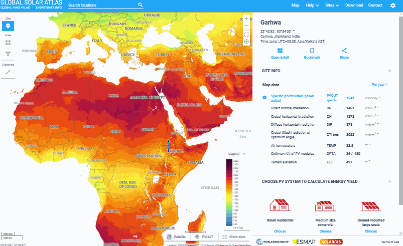
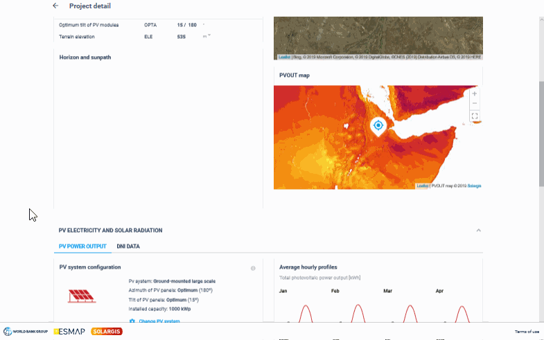
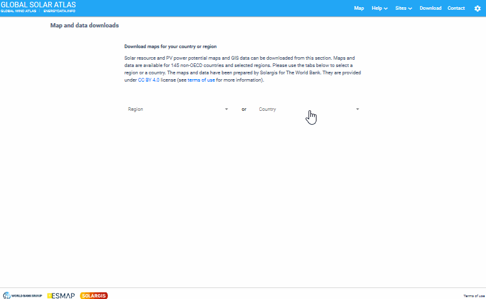
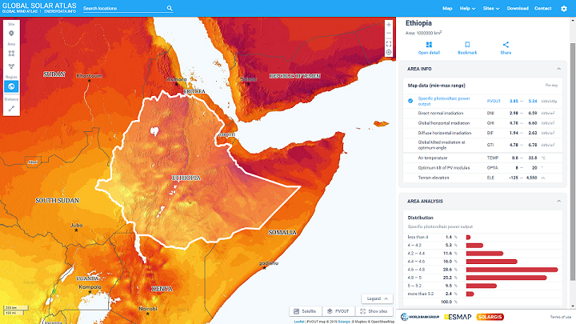

Güneş Enerjisi Araştırması
Bu rapor, yenilebilir enerji kaynakları ve solar enerji hakkında çalışan sistemler üzerine bilgi sahibi olmak amacıyla oluşturulmuştur.
Renewables Ninja
Hakkında
Renewables.ninja , dünya çapında herhangi bir yerde bulunan rüzgar ve güneş enerjisi santrallerinin saatlik güç çıkışını simüle etmenize olanak tanır. Bu araç, bilimsel kalitede hava ve enerji verilerini daha geniş bir topluluğa sunmaya yardımcı olmak için inşa edilmiştir.
Takım
Renewables.ninja, yenilenebilir teknolojilerin enerji sistemlerimize entegrasyonunun etkilerini araştıran Stefan Pfenninger ve Iain Staffell arasında bir iş birliği ile geliştirilmiştir. Stefan, proje lideridir, güneş enerjisi modelini tasarlar ve web uygulamasının ana planını yapar. Ayrıca, TU Delft 'te doçenttir. Iain, rüzgar enerjisi modelini tasarlamıştır ve web uygulamasının geliştirilmesine katkı sağlar. Imperial College London'da sürdürülebilir enerji üzerine ders vermektedir.
Lisans ve Veri Kullanım İzinleri
Renewables.ninja aracılığıyla erişilebilen veriler, Creative Commons Atıf-NonCommercial 4.0 Uluslararası (CC BY-NC 4.0) lisansı altında lisanslanmıştır, bu da verileri -şart koşulan uygun krediyi sağladığınız sürece- ticari olmayan amaçlar için kopyalayabileceğiniz, yeniden dağıtabileceğiniz ve uyarlayabileceğiniz anlamına gelmektedir. Verilerin olduğu gibi ve garanti olmaksızın sağlandığını unutmayınız.
Veri Kaynakları
Ninja, küresel yeniden analiz modellerinden ve uydu gözlemlerinden hava verilerini alarak çalışır. İki veri kaynakları şunlardır:
- NASA MERRA yeniden analizi [3] MERRA
- CM-SAF'ın SARAH veri seti [4,5] (2015 EUMETSAT Telif Hakkı) SARRAH
Güneş ışınımı verileri, Stefan Pfenninger tarafından yazılan GSEE modeli (Global Solar Energy Estimator) [1] kullanılarak güç çıkışına dönüştürülür. Rüzgar hızları, Iain Staffell tarafından yazılan VWF modeli (Virtual Wind Farm) [2] kullanılarak güç çıkışına dönüştürülür
API
Renewables.ninja API, kullanıcıların küresel yeniden analiz modellerinden ve uydu gözlemlerinden alınan hava verilerini kullanarak rüzgar ve güneş enerjisi santrallerinin saatlik güç çıkışını simüle etmelerine olanak tanır. API, anonim olarak veya kayıtlı bir kullanıcı olarak erişilebilir ve web sitesi ile aynı kullanım sınırlamalarına tabidir.
Renewables.ninja API, güneş ve rüzgar enerjisi üretimi simülasyonları için kapsamlı bir araçtır ve bilimsel araştırmalar, eğitim amaçlı kullanımlar ve enerji sektörü profesyonelleri tarafından değerli bir kaynak olarak kullanılabilir.
Referanslar
- [1] Pfenninger, Stefan and Staffell, Iain (2016). Long-term patterns of European PV output using 30 years of validated hourly reanalysis and satellite data. Energy 114, pp. 1251-1265. doi: 10.1016/j.energy.2016.08.060
- [2] Staffell, Iain and Pfenninger, Stefan (2016). Using Bias-Corrected Reanalysis to Simulate Current and Future Wind Power Output. Energy 114, pp. 1224-1239. doi: 10.1016/j.energy.2016.08.068
- [3] Rienecker MM, Suarez MJ, Gelaro R, Todling R, et al. (2011). MERRA: NASA’s Modern-Era Retrospective Analysis for Research and Applications. Journal of Climate, 24(14): 3624-3648. doi: 10.1175/JCLI-D-11-00015.1
- [4] Müller, R., Pfeifroth, U., Träger-Chatterjee, C., Trentmann, J., Cremer, R. (2015). Digging the METEOSAT Treasure—3 Decades of Solar Surface Radiation. Remote Sensing 7, 8067–8101. doi: 10.3390/rs70608067
- [5] SARAH dataset. doi: 10.5676/EUM_SAF_CM/SARAH/V001
İletişim
Mail yolu ile iletişim için contact@renewables.ninja
Global Solar Atlas
Hakkında
Dünya Bankası ve Uluslararası Finans Kurumu (IFC) , kısaca Dünya Bankası Grubu olarak, müşteri ülkelerinde güneş enerjisinin artırılmasını desteklemek amacıyla bu Global Solar Atlas ’ı, küresel, bölgesel ve ülke GIS veri katmanları ve poster haritaları serisi ile birlikte sunmuştur. Bu çalışma, Dünya Bankası tarafından yönetilen ve 13 resmi ikili donör tarafından desteklenen, Enerji Sektörü Yönetim Yardım Programı (ESMAP) tarafından finanse edilmiştir. Bu, biyokütle, küçük hidro, güneş ve rüzgarı içeren küresel bir ESMAP Yenilenebilir Enerji Kaynak Haritalama girişiminin bir parçasıdır.
Dünya Bankası Grubu, güneş verileri ve ilgili güneş enerjisi değerlendirme hizmetleri konusunda küresel sağlayıcısı olarak Solargis'i seçmiştir. Bu Küresel Güneş Atlası, Solargis tarafından Dünya Bankası için bir sözleşme kapsamında hazırlanmış olup, kendilerine ait ve bakımını yaptıkları bir güneş kaynak veri tabanına dayanmaktadır. Ticari sorgular için doğrudan Solargis ile iletişime geçmek gerekmektedir.
Küresel Güneş Atlası, bir site veya bölgenin güneş enerjisi potansiyeli hakkında size genel bir bakış sağlayacak çevrimiçi bir araçtır.
Küresel Güneş Atlası 4 ana özellik sunar:
-
Etkileşimli haritalar
Etkileşimli haritalar, bir bölgenin güneş kaynak potansiyelini görselleştirmenize olanak tanır ve her harita tıklaması için yıllık ortalama değerler sağlar.
 -
PV enerji verimi hesaplayıcısı
PV verim hesaplayıcısı, özel tanımlı bir PV sistemi için uzun vadeli enerji verimini hesaplamanıza olanak tanır. Enerji verimi tahminleri, PV üretiminin mevsimsel ve günlük içi değişkenliğini anlamanıza olanak tanıyan 12x24 (ay x saat) profilleri olarak sağlanır.
 -
İndirilebilir haritalar ve CBS verileri
Ülke bazında güneş enerjisi potansiyelinin anlık görüntüleri, politika yapıcıların ve araştırmacıların ilgi alanlarındaki ülkeler ve bölgeler için güneş enerjisinin teorik ve pratik potansiyelini anlamalarına yardımcı olmak amacıyla hazırlanmıştır.
 -
Ülke ve bölgesel güneş enerjisi potansiyel istatistikleri
İndirme bölümü, sunum amaçları için poster haritalarının indirilmesine olanak tanır. Ek olarak, QGIS, ArcGIS gibi yazılımlar kullanarak ileri düzey coğrafi uzamsal analiz için CBS veri katmanları indirilebilir.

Küresel Güneş Atlası'nın Sınırlılıkları
Küresel Güneş Atlası'nın amacı, politika yapıcıları, araştırmacıları ve ticari güneş enerjisi şirketlerinin daha iyi kararlar almasına yardımcı olacak güvenilir giriş seviyesi veriler sağlamaktır. Büyük güç santrallerinin proje özgü analizi için, Küresel Güneş Atlası aracılığıyla sunulan veriler yalnızca ön analiz için uygundur. PV verim tahminleri, bir fotovoltaik güç santralinin potansiyel verimini etkileyebilecek birçok önemli faktörü hesaba katmamaktadır. Büyük güç santralleri için, enerji veriminin kesin bir tahminini elde etmek amacıyla daha ayrıntılı verim tahmin araçları ile çalışılması önerilir.
Veri Kaynakları & Kullanılan Veriler
Küresel Güneş Atlası, hem modellemeye dayalı hem de ölçülmüş güneş ışınımı ve meteorolojik verilerin sunulduğu açık veri girişimidir.
Metodoloji
Atlas tarafından sağlanan konum özgü bilgiler, üç ana farklı modeli içerir:
- Güneş ışınımı modeli
- Hava sıcaklığı modeli
- PV güç simülasyon modeli
İletişim
Google Maps Solar API
Hakkında
Google Haritalar Platformu Solar API, güneş ve enerji sistemi kurulumlarını hızlandırmaya yardımcı olmaya odaklanan bir hizmettir. Solar API, yenilenebilir çatı güneş enerjisi potansiyelini ve tasarruflarını tahmin etmeye yardımcı olmak için Google'ın geniş harita ve bilgi işlem kaynaklarına dayanan ayrıntılı çatı verileri oluşturur.
Veriler
API, üç uç noktaya yönelik istekleri kabul eder:
- buildingInsights: Bu hizmet uç noktası, bir binanın konumu, boyutları ve güneş enerjisi potansiyeli hakkında analizler döndürür.
- dataLayers: Bu hizmet uç noktası, bir konumu çevreleyen alan için ham güneş enerjisi veri kümelerine ait URL'leri döndürür.
- geoTiff: Bu uç nokta; dijital yüzey modeli, havadan görüntü, yıllık ve aylık akı haritaları ve saatlik gölgeyi içeren kodlanmış güneş enerjisi bilgilerine sahip kafesleri getirir.
Bu veriler kullanıcılara şu konularda yardımcı olabilir:
- Uzaktan güneş enerjisi sistemi tasarlama
- Güneş enerjisi sahasını değerlendirme süresini azaltma
- Yükleme konumlarına öncelik verme
Solar API Kapsamı
Ülke bazında en güncel kapsam ayrıntıları için Solar API'nin desteklendiği ülke ve bölgelere bakın.
Solar API Demosunu Deneyin
Solar API'nin özellikleri hakkında daha fazla bilgi edinmek için Solar API demo web uygulamasına göz atın. Ayrıca isteğe bağlı olarak, GitHub'da demoyu oluşturmak için kullanılan kodu yeniden kullanabilirsiniz. kodu yeniden kullanabilirsiniz.
Analiz & Bilgi Sunma
Google Maps Solar API sadece bina bilgilerini kullanarak bir sorgu yapmaya izin verir. Bu sorguda Amerikada da daha kolay yapılırken, Amerika dışında kalan bölgelerde sorgu parametrelerinin girilmesi ile mümkün olur. Güneş paneli boyutu, yıllık güneş ışığı miktarı ve karbon ofset faktörleri dahil güneş enerjisi potansiyeli, Güneş panelinin konumu, yönü ve enerji üretimi, Optimum güneş enerjisi düzeninin ve ilgili maliyetlerle avantajların tahmini aylık enerji faturası gibi konularda bilgi sağlar. Bu bilgiler sayesinde binanın maliyet ve tasarrufu hesaplanabilir. Amerikada otomatik olarak yapılan bu hesaplama diğer bölgelerde parametrelerin farklığı nedeniyle otomatik olarak gerçekleştirilememektedir.
Faturalandırma
Solar API, kullandıkça öde fiyatlandırma modeli kullanır. Google Haritalar Platformu API'leri ve SDK'ları, SKU'ya göre faturalandırılır. Kullanım her SKU için izlenir ve herhangi bir API'nin veya SDK'nın birden fazla ürün SKU'su olabilir. Detaylı bilgi için tıklayınız.
NSRDB: National Solar Radiation Database
Hakkında
NSRDB (Ulusal Güneş Radyasyonu Veri Bankası), meteorolojik verilerin saatlik ve yarım saatlik değerlerinin ve güneş radyasyonunun üç en yaygın ölçümünün: global yatay, doğrudan normal ve dağınık yatay ışınımın seri olarak tam bir koleksiyonudur.
Veritabanı, Amerika Birleşik Devletleri'ni ve artan bir uluslararası lokasyon alt kümesini kapsar. Bu veriler, bölgesel güneş radyasyonu iklimlerini doğru bir şekilde temsil etmek için yeterli sayıda lokasyonda ve zamansal ile mekansal ölçekte toplanmıştır. Veri seti tarafından kapsanan belirli bir lokasyonda, belirli bir zamanda mevcut olan güneş enerjisi miktarını görmek ve geçmiş koşullara dayanarak güneş enerjisinin potansiyel gelecek erişilebilirliğini tahmin etmek mümkündür.
Türkiye üzerinden veri çekmek istediğinizide, Verini kaynağı METEOSAT (2017-2019) olucaktır. Bu verileri 15, 30 ve 60 dakikalık aralıklarla seçtiğiniz konumun 4 kilometrelik çevresi üzerinden sunar.
daha detaylı bilgi için tıklayınız.
SAM & PVWatts
Güneş enerjisi panellerinin detaylı enerji getirilerini hesaplamak için iki ayrı teknoloji geliştirmişlerdir, System Advisor Model (SAM) ve PVWatts ile bir sistemin detaylı enerji getirilerini hesaplayabilirsiniz.
SolarCity Simulator
SolarCity , ev halklarına, işletmelere ve belediye makamlarına, çatı monteli güneş fotovoltaik (PV) sistemleri kullanarak elektrik üretme olasılıklarını değerlendirmelerine yardımcı olmak için oluşturulmuş bir web tabanlı simülatör uygulamasıdır.
Evler ve işletmeler için simülatör, çatı güneş PV'sinden elde edilebilecek muhtemel tasarrufları diğer güç kaynaklarıyla karşılaştırarak ve bir nakit akışı finansman modeline dayanarak hesaplamak için araçlar sağlar.
Belediye makamları için simülatör, her şehrin çatı güneş PV piyasası üzerindeki farklı politika teşviklerinin - üretim veya sermaye sübvansiyonları gibi - değerlendirmelerini destekler.
SolarCity simülatörü, ultra yüksek çözünürlüklü üç boyutlu bina ayak izleri ile bir metre kare (m2) hücrelerde hesaplanan güneş ışınımı verilerini birleştirir. Uluslararası Yenilenebilir Enerji Ajansı (IRENA) tarafından Yenilenebilir Enerji için Küresel Atlas kapsamında geliştirilen bir dizi web uygulamasından biridir.
Türkiyede sadece Gaziantep, Şahinbey ilçesinde hizmet vermektedir.
Karşılaştırma
Aşağıdaki tablo, raporda yer alan teknolojilerin karşılaştırılmasını içermektedir.
| Sorular | Renewables.ninja | Global Solar Atlas | Google Solar API | NSRDB | Solar City Simulator |
|---|---|---|---|---|---|
| Verileri nasıl temin ediyor? | Nasa Merra & Sarrah | Solargis & World Bank Group | Özel Veriler | Meteostat, Himawari, Extended Americas | IRENA |
| API sağlıyor mu, ticari kullanıma açık mı? | API sağlıyor ancak ticari kullanıma kapalı | API Sağlamıyor | API sağlıyor, ücretli | PVWatts API sağlar | API sağlamıyor |
| Özgün değeri ne? | Rüzgar ve Güneş enerjisi verilerine aynı anda erişim sağlar, hava durumu verilerini daha detaylı ele alır, kullanılacak teknolojiye göre enerji getirisini hesaplar. | Uydu görüntüsüne erişim sağlayıp farklı verilere göre sıcaklık haritası sunar, Detaylı grafiksel raporlar sunar. | Yapılar üzerinde yer alacak panellerin, binaya yıllık katkısını ve maliyetini hesaplar. | Verileri istediğiniz zaman aralığında istediğiniz kaynaktan indirebilmenizi sağlar. SAM & PVWatts ile panellerin detaylı analizlerini yapmaya imkan tanır. | Kullanıcının seçtiği binanın gelir gider gibi verilerini ülkeye göre ayrı olarak hesaplar. Sadece belediyelere özel olarak, detaylı bir çatı üstü PV model analizi sunar. |
| Enerjiyi yeterince iyi hesaplıyor mu? | Saatlik veriler üzerinden, akademik çalışmalar ile elde edilen formülleri kullanır, kullanılan panel tipinden bağımsız olarak kapasite ve sistem kaybı gibi etmenleri baz alan bir hesaplama yapar. | 15 dakika ara ile alınan veriler üzerinden hesaplamalar yapar, yer tarama ve ön fizibilite için uygundur. Genel kristal silikon modeller ile 3 ayrı tipde hesaplama yapabilir. | Solar API tarafından hesaplanan değerler panel verimliliğinden bağımsızdır. Enerji üretimini hesaplamak için panellerin kilovatajıyla çarpıp diğer sistem kayıplarını hesaba katmanız gerekir. | SAM & PVWatts ile yıllık ortalama enerji getirisini hesaplayabilir. SAM ile çok daha detaylı analizler yapmak mümkündür. | Seçilen binaya ait detaylı bir analiz sunar, İç Karlılık Oranı (IRR) vb. metrikleri hesaplar. |
| Gelir hesabı yapabiliyor mu? | Hayır | Hayır | Kullanılan bölgeye göre farklı parametreler kullanarak gelir hesabı yapar. | SAM ile farklı sistemlerin ekonomik ve finansal uygulanabilirliği hesaplanabilirken PVWatts ile ise yıllık enerji geliri hesaplanabilir. | Yatırım Maliyetini ve Geri Ödeme süresini hesaplar. |
| Kullanımı kolay mı? | Zor | Orta | Kolay | Orta | Kolay |
Global Energy Monitor
Hakkında
Global Güneş Enerjisi Gücü İzleyicisi, ölçekli güneş fotovoltaik (PV) ve güneş termal tesislerinin dünya çapındaki bir veri setidir. 20 megavat (MW) veya daha fazla kapasiteye sahip güneş çiftliği aşamalarını kapsar. İzleyici ayrıca 1 MW ile 20 MW arasındaki aşamaların kısmi kapsamını da içerir.
Bir güneş projesi aşaması genellikle tek bir izin altında kurulan ve genellikle aynı anda çevrimiçi olan bir veya daha fazla güneş ünitesinin bir grubu olarak tanımlanır. Global Güneş Enerjisi Gücü İzleyicisi, işletmede olan, duyurulan, ön inşaat aşamasında olan, inşaat halinde olan, askıya alınan, iptal edilen, kullanım dışı bırakılan veya emekliye ayrılan herhangi bir durumdaki bu kapasite eşiklerindeki her güneş çiftliği aşamasını kataloglar.
Kaynaklar
- EPA United States Environmental Protection Agency Toolbox
- European Commision BUILD UP
- European Commision Renewable energy directive
- T.C. Enerji ve Tabii Kaynaklar Bakanlığı